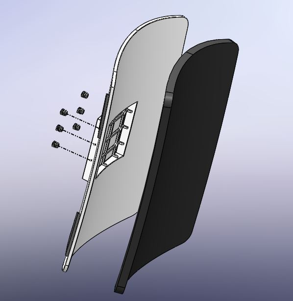

Modular Exoskeleton
Designed a 2 DOF hip actuator to assist Parkinsonians who experience 'Freezing of Gait'. The purpose of the device is to first detect freezing of gait, then provide actuation at the hip to reinitiate ambualation.
Prototype 1
Active Joint
FEA - Shank
Hip Attachment
Exploded view of Hip Attachment and foam padding
Thigh Attachement
Exploded view of Hip Attachment and foam padding